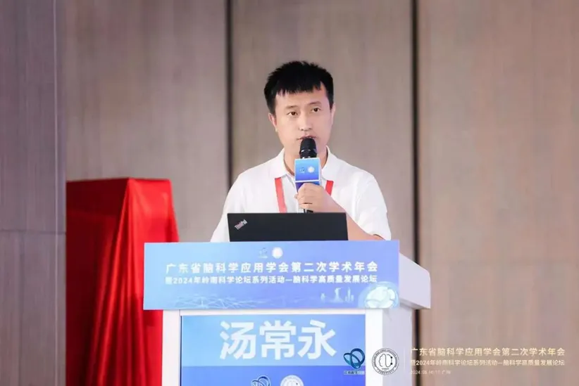

神经生物学与生物信息学方向博士后/科研助理/推免硕士生| 中山大学-广州医科大学联合招聘
原文：https://mp.weixin.qq.com/s?__biz=MzAwMzIzOTk5OQ==&mid=2247538900&idx=2&sn=c22abc8db7f28d78a25406205f605b39&chksm=9b3c2184ac4ba892d4e3dac0d835b5b354048e8a6b4e4502f8062e9fba8318d3320de24af485#rd 合集：求职/求学/招聘
01
写在前面
我们长期发布招聘/求职板块(甚至我给自己都发了求职：Biomamba求职| 国奖+4篇一作SCI)，欢迎各位老师/老板欢迎联系~我们也在招贤纳士：Biomamba生信基地诚招运营。其它需要求职的小伙伴也欢迎把简历发给我们[Biomamba_zhushou]，大家一起找工作/学习。用人单位也可以联系我们免费刊登招聘信息~
02
团队简介

汤常永，中山大学“百人计划”引进人才，中山大学附属第三医院研究员、博士生导师。2019年毕业于中国科学院遗传与发育生物研究所并获得神经生物学专业博士学位，布朗大学博士后。曾获得北京市优秀毕业生、中科院优秀毕业生、中科院院长优秀奖等奖励。主要研究神经干细胞和星形胶质细胞及其微环境在神经退行性疾病（如衰老、AD等）和神经免疫性疾病（如NMOSD、MS等）中的作用。近年来以第一/通讯作者（含共同）在Neuron（2019，第一作者）、JCI（2026，最后通讯）、Science Advances（2023，最后通讯；2025，共同通讯）、Mol Psychiatry（2026，共同通讯；2023，第一作者）、Cell Reports（2024，最后通讯；2023，最后通讯；2019，第一作者）、Molecular Therapy（2023，最后通讯；2025，共同通讯；2026，共同通讯）等期刊发表论文20余篇，多篇获Nature Reviews Neurology、Neuron等期刊专题评述或入选Featured Article。相关工作获国际同行认可，受邀为Cell Reports、Advanced Science、Stem Cell Reports等期刊审稿，并在国内外学术会议作专题报告10余次。主持国自然2项，作为课题骨干参与科技创新2030—“脑科学与类脑研究”青年项目1项，主导1项研究已进入临床试验（NCT05540262）。作为骨干参与国家重大项目一项，主持国家自然科学基金2项，主持广州市科技计划项目2项，作为项目骨干参与广州市2024年度国家重点研发计划递补支持专题重大科技项目1项，主持广东省企业横向项目1项。
张宇虹，广州医科大学“南山学者”引进人才，特聘教授，研究生导师，博士后合作导师，主要从事研究神经干细胞和星形胶质细胞及其微环境在神经系统疾病（抑郁/焦虑、阿尔茨海默病等）中的作用，涉及单细胞时空多组学、病毒示踪、神经递质检测、电生理记录及动物行为范式检测等技术。近 5 年在 Cell Stem Cell、Developmental Cell、Nucleic Acids Res 、Stem Cell Reports、Neurosci Bull等国际权威学术期刊发表多篇研究论文。先后获得中国科学院院长优秀奖、中国细胞生物学学会青年优秀论文奖、中国科学院优秀博士学位论文奖等，主持和参与国家自然科学基金等项目多项。
现汤常永与张宇虹课题组联合长期招聘博士后与科研助理，开展神经免疫和神经精神类疾病的遗传发病机制研究，课题基础良好。因学科建设及科研工作需要，长期诚聘博士后和科研助理，每年均有一定名额，欢迎有志青年加入！
03
科研条件
本研究团队有完善的科研训练体系、良好的临床和基 研究科研条件、丰富的生物样本资源、扎实的国内外知名团队合作基 以及充足的在研科研经费。已建立单细胞多组学数据分析、动物行为学实验、电生理检测、病毒示踪、光遗传、神经影像分析、钙信号光纤记录、神经递质探针等技术体系。此外，配备双光子显微镜、共聚焦显微镜和一系列分子生物学实验设备，为各项实验提供良好条件。课题组目前成员包括博士后、科研助理、临床医生、博士生与硕士生等，具备开展临床研究与基 实验的多元化人才梯度。所在学科为国家“双一流”建设学科、国家临床重点专科；拥有硕、博士学位授权点和博士后流动站。
04
研究方向
1. 神经干细胞和星形胶质细胞及其微环境在神经精神类疾病（如抑郁症）、神经退行性疾病（如AD）和神经免疫性疾病（如NMOSD、MS等）中的作用。我们过去揭示CHI3L1介导神经炎症导致认知缺陷，为相关疾病提供标志物和治疗靶点（Sci.Adv. 2023、Cell Rep. 2024、Prog. Neurobio. 2024）；
2.神经干细胞衰老与再生机制。我们过去阐明了神经干细胞源性PTN是促进神经发生、改善衰老相关神经退行性疾病认知缺陷的关键营养因子（Neuron 2019、Cell Rep.2023）；
3.NMOSD神经损伤修复。我们过去发现增强髓鞘再生、抑制神经炎症能够促进神经损伤修复，并改善运动功能障碍的新途径（Mol.Ther. 2023、Glia 2023、NPJ Regen.Med. 2024、Phytomedicine 2024）。
05
招聘岗位
博士后 3-4 名，科研助理 1-2名。
工作地点：广州市荔湾区明心路 36 号/广州市天河区大灵山路61号
1. 博士后（3-4 名）
岗位要求：
（1）35 岁以下，即将取得或已取得博士学位（获学位时间一般不超过3年），研究背景以下两者具备其一：
1) 湿实验方向需要具有神经生物学、精神病学、免疫学、遗传学、生理学、发育生物学、分子生物学、细胞生物学等相关生物学或基 医学专业背景。有神经环路、动物行为实验、脑片/在体电生理经验优先考虑；
2) 干实验方向需要具有生物信息学、计算生物学、生物统计学、基因组、应用数学等相关专业背景，拥有编程能力，能够运用至少一种编程语言（R/Python 等），熟悉 Unix/Linux 操作环境或有统计学基 。有人工智能与大数据（转录组/蛋白组/代谢组等生物医学数据）、单细胞多组学数据分析经验优先考虑；
（2）热爱科研，为人真诚宽厚，责任心强，团队协作意识强；
（3）具备高度的自驱力，独立工作能力和科学研究能力，具备良好的英文阅读和写作能力，能独立开展课题研究；
（4）具有较好的学术研究成果，以第一作者（含并列）发表过相关领域SCI 论文至少 1 篇，能全脱产进站从事博士后工作。
岗位职责：
（1）相对独立开展科研工作，完成相应科研任务，并撰写和发表高水平学术论文；
（2）积极撰写申报各类符合条件的科研项目，如中国博士后基金、国家 “博新计划”、国家自然科学基金青年项目、广东省及广州市科研基金项目等；
（3）协助指导和培训本科生与研究生，参与实验室管理。
岗位待遇：
（1）薪资：A 档和 B 档基 年薪分别为 37 万和 30 万（根据个人资历评定）；外加五险一金单位部分（约 10 万元）；团队视业绩予以补充奖励。
（2）聘期：聘期 3 年，达到出站要求者可提前出站（但最少在站 21 个月）。
（3）经费：配套 20 万元广州市博士后科研启动费；此外，课题组根据开展项目提供所需经费。
（4）绩效：按照单位政策发放绩效奖励，最高达 35 万。
（5）出站留穗安家费 30 万（需与市属单位签订 3 年以上工作合同），如获批海外博士后人才支持项目留粤工作可获留粤资助 40 万元（需签订 3 年或以上工作合同）。具体参照申请时的实施政策。
（6）支持申报博士后创新人才支持计划、博士后国际交流计划、海外博士后人才支持项目等博士后专项，可申报国家自然科学基金、中国博士后科学基金等基金项目。如入选博士后专项，按就高标准提高待遇。对于获选者，将按照相应文件规定配套资助科研经费等。
（7）享受医院职工工会福利。根据个人需要，可协助办理个人落户。出站后择优在编留校或加入“南山学者”人才计划。
2. 科研助理（1-2名）
岗位要求：
（1）专科及以上学历，神经生物学、分子生物学、细胞生物学等相关生物学或基础医学专业背景，有意向留在团队攻读硕士学位。
（2）具有高度自我驱动力，热爱科研，工作认真严谨，善于沟通，具有服务意识和团队意识，责任心强。
（3）学术背景良好，有小鼠动物行为学实验经历者优先。
岗位职责：
（1）参与动物行为学等神经科学相关实验
（2）负责团队仪器维护，试剂耗材的采购等
（3）实验室常规业务管理，协助完成实验室科研任务
岗位待遇：
（1）薪资4000-5000元/月（税前），五险一金等参照单位相关规定执行。
（2）鼓励科研助理以主要负责人身份完成课题，并留在团队攻读硕士学位。
（3）根据个人意愿和工作能力，课题组协助提供深造条件和机会，拓宽个人职业发展渠道。
3. 硕士生（3-5名）
课题组每年约有3个推免和1-2个统招硕士生名额，欢迎有相同志趣的同学加入。
申请条件：
1、推免生需要获得高等院校获得推荐免试资格的优秀应届本科毕业生（即2026年7月本科毕业）。统考生可前来实验室实习。
2、研究背景以下两者具备其一：
1) 具有动物学、神经生物学、遗传学、生理学、分子生物学、细胞生物学、精神病学等相关生物学或基础医学专业背景
2) 具有生物信息学、计算生物学、生物统计学等相关专业背景，对编程和数据分析感兴趣。
3、具有高度的自我驱动力，良好的沟通协调能力及团队协作精神。勤奋好学，积极向上，有志在本专业领域内深造发展。
研究环境：
学校为硕士研究生提供极具竞争力的奖助体系与优质住宿环境；实验室为研究生、访问学生及实习生配备舒适的科研办公空间，兼顾学术发展与生活质量。课题组将提供除国家和学校等补贴外的额外学生补助，并对有重要科研产出的学生提供各类奖励，包括科研奖金、国内外名校联合培养和学术会议交流机会等。
06
联系方式
请应聘者将个人简历发送至邮箱：zhangyuhong@gzbrain.cn，并抄送至tangchy23@mail.sysu.edu.cn，邮件标题注明：应聘岗位+本人姓名，应聘者的申请材料会严格保密，初审通过者将近期安排面试。本招聘长期有效，招满即止。